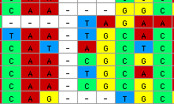

Highlights of some new features in MacClade 4
The new version of MacClade will have many improvements in
user-interface, as well as much more extensive tools for data
manipulation. This page highlights a few of the changes,
concerning:
 Editing
data
Editing
data -
Consensus
sequences
-
List windows and the
selection and manipulation of objects
-
Interactions with
PAUP
Editing
data
There are many changes in MacClade's data editor, including many
new display modes and editing tools. Some of these are general, but
the majority are designed for use with molecular sequence data. Here
we will mention of few of these.
Display of data
There are many options for how data can be displayed. Here are two
examples.
You can ask MacClade to color data cells so that the patterns of
state variation are more evident:
With protein-coding nucleotide data, you can ask MacClade to show
the amino acid translation. This translation is "live", in the sense
that changes to the nucleotides, for example through use of the
alignment tools (see next section), cause
immediate updates to the amino acids shown.
Tools in the Editor
In MacClade 3, there is only one tool available in the editor: the
arrow. MacClade 4 has a tool palette, with 17 tools:
Many of the tools have multiple functions and options; brief
descriptions of some of their functions follow:
|
Tool
|
Description
|
|
|
Standard tool: this is more or less the same as
what is was in MacClade 3
|
|
|
Block selector: selects blocks in the matrix
|
|
|
Selection wand: In standard mode, if you touch on
cell in the matrix, and it is a gap, then the largest
contiguous piece of gaps containing that cell is selected,
restricted to one taxon; if it is not a gap, then the
largest continuous piece of non-gaps containing that cell is
selected. If you touch on a taxon name, all taxon names are
selected; if you touch on a character name, all character
names are selected. There are other modes, with different
behaviors.
|
|
|
Select to end tool: If you touch on cells in
matrix, it will select from that cell to the end (or start,
depending upon the mode) of the matrix.
|
|
|
Scissors tool:
excises pieces of the matrix. It removes the data and
moves the remainder of those sequences to the left (or
right, depending upon the mode).
|
|
|
Stamp clipboard tool: Select a block of cells, and
copy them to the clipboard. Then choose this tool, and you
will be able to move the clipboard contents around the
edtior. To paste the contents onto a region, click the mouse
button to stamp the cells down.
|
|
|
Pairwise alignment tool: drag one sequence on to
another, and a simple Needleman-Wunsch algorithm will be
performed, aligning the dragged sequence onto the one on
which it is dropped.
|

|
Block move tool:
this is the main manual alignment tool. To use it touch
on a nucleotide or amino acid; MacClade will automatically
grab and let you move an entire chunk of the sequence (by an
entire chunk, we mean the largest contiguous piece of
non-gaps). You will be able to move it forward and backward
through any bounding gaps. There are several options for
this tool, which affect the mode of action.
|
|
|
Selected block tool: an alignment tool that lets
you move selected blocks in the matrix. Equivalent, more or
less, to the block move tool, except that it only works on
selected blocks, and doesn't allow you to split a block. The
advantage is that it allows you to move multiple sequences
at once. Valuable in conjunction with the magic wand
tool.
|
|
|
Close gaps tool: this tool moves the selected
block as far to the left or right as possible, by shifting
the block to close any adjacent gaps.
|
|
|
Split Block tool: allows you to split a block of
data to introduce gaps; must be used on boundaries between
cells.
|
|
|
Split others tool:
Similar to the split block tool except that it moves all
sequences OTHER than the one being dragged.
|
|
|
Eyedropper tool: touch on a cell in the matrix and
MacClade will use the state in that cell as the paint state;
touch on a taxon name or a taxon number and the paint state
will be the state present in that taxon. e.g. say taxon 5's
number is touched on, and the states for taxon 5 are 01102
for the first five characters. Then using the paintbrush or
paintbucket on any taxon's character 1 will paint state 0,
any taxon's character 2 will paint state 1, and so on.
|
|
|
Paint brush tool. use this tool to set the state
of any cell touched on to be the state represented by the
"paint" (see the eyedropper tool, above, for a description
of the paint options and how one changes the paint).
|
|
|
Paint bucket tool: use this tool on a selected
block of cells and that block will be filled with the state
represented by the "paint" (see the eyedropper tool, above,
for a description of the paint options and how one changes
the paint) or with random data, depending upon the mode. You
can also restrict the paint bucket so that it only fills
cells containing a particular state. You can also specify
the MacClade not fill every cell selected, but instead a
chosen fraction. For example, if you choose 0.1 as the
fraction, then MacClade will fill each of the chosen cells
with a probability of 0.1; thus, on average, only 10% of the
cells will be altered.
|
|
|
Pop-up states tool: touch this on a cell, and a
menu will pop up listing the states for that character.
Choose one, and that state will be entered into that cell.
If the states have been given names, those state names will
be displayed in the pop-up menu.
|
|
|
Show picture tool: touch this on a cell to which a
picture has been attached and the picture will be
displayed.
|
An example tool: Block Move
Several of the tools allow you to manual align sequences by moving
all or part of them. For example, let's say you wanted to move the
middle of these three sequences to the left. You could grab the
sequence with the "block move" tool in the editor, and push the
second sequence to the left:
As you are moving the sequence MacClade updates the amino acid
translation:
When you have moved it to where you wish you can let go:
This is one of the many tools with options that allow you to
control the behavior of the tool. For example, with this tool
- if Allow Matrix Edges to Expand is chosen, then
MacClade will add more characters to the start or end of the
matrix to make room for sequences pushed off the start or
end.
- if Move Entire Sequence is chosen, then the entire
sequence, exclusive of terminal gaps, will be moved
- if Accumulate Sticky Blocks is chosen, then as you move
one piece along, if it bumps into another piece, then that other
piece will be joined to the first piece and you will now be moving
both pieces, as one.
- if Allow Block Splitting is chosen, then the Block Move
Tool behaves as the Split Block Tool when the mouse is over the
boundary between two cells
An example tool: Scissors
The scissors tool excises pieces of the matrix.
For example, if one used it on following selected block:
those 12 cells would be removed from the matrix and the end of the
six sequences would be shifted to the left:

An example tool: Split Others
When one clicks on the boundary between two characters in one
taxon and pulls to the right or left, this tool moves all the OTHER
taxa to the right or left. For example, if one positioned the tool as
shown:
and pulled one column to the right, all other sequences would be
moved to the right, and gaps inserted:
Consensus
sequences
MacClade 4 can calculate and display consensus sequences. There
are several options for the calculation, allowing one to display
consensus sequences of varying stringency. In the figure below, two
different consensus sequences are shown:
You can choose to have the consensus sequences calculated over all
taxa, or only over a particular set of taxa.
List
windows and the selection and manipulation of objects
In MacClade 3, there is a Character Status Window which lists the
characters and their various properties. This is the window in which
you can change the weights and types of a character. In MacClade 4,
the Character List Window has been much improved, and there are now
also equivalent windows for taxa, trees, weight sets, type sets,
inclusion sets, character sets, and taxon sets. In these windows you
can rename, reorder, delete, and modify these objects.
In the list windows, there are three tools available:

The selection wand will select any similar object. For example, if
you use it on any of the columns in a list window to the right of the
name column, it will select all objects with the same value in that
column. For example, if you touched on a "2" in the States column in
the Character List window:

then MacClade would select all objects that have two
states:
With this you can select all taxa without missing data, or all
trees with polytomies, or all characters of a particular weight, and
so on. You can then edit them as appropriate.
Interactions
with PAUP*
There are a number of features added to MacClade 4 to improve
interactions between PAUP* and MacClade. Here are three examples:
Nexus block management
You can now manipulate various NEXUS blocks contained in the data
file, including PAUP blocks. This allows one to edit commands that
PAUP will process when it executes the file.
Constraint Trees
You can ask MacClade to save the tree on the screen as a
constraint tree. If you do this, save the file in MacClade, and then
re-execute it in PAUP*, the constraint will be available for use with
PAUP's searching and filtering commands.
Decay Index
While MacClade 4 does not calculate decay indices (Bremer support
values) itself, it will create a PAUP file containing the text
commands necessary to calculate the decay index values of all clades
on the tree in MacClade's tree window. If you then execute this file
in PAUP, PAUP will perform all of the relevant searches to calculate
decay indices.
|